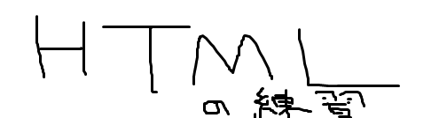

HTMLをいろいろ試してみる
下にいろいろできることを記載
見出し1へ
見出し2へ
強調
引用
話題1
話題2
行1
行2
行3
行1
行2
行3
<br>タグを表示したいときとか
項目1
項目2
項目3
項目1
項目2
項目3
項目1
文章1
項目2
文章2
大項目
中項目
小項目
1
りんご
100円
2
みかん
200円
MDN(別タブ)
MDN(同タブ)
区切りタブの練習
フォーム部品の練習
他階層の別ページ
一番上に戻る1
一番上に戻る2
見出し1
文章1
見出し2
文章2